4
Examining Program Data
This chapter explains how to use the SKILL IDE debugger to inspect the call stack, examine or change the values of variables, and analyze the state of your program. This chapter is organized into the following sections:
- Examining and Modifying Variable Values
- Examining the Call Stack
- Viewing Class Inheritance Relationships
- Working with the Method Browser Assistant
- Improving the Efficiency of Your SKILL Code
- Working with the Finder Assistant
- Working with the Code Browser Assistant
- Working with the Profiler Assistant
- Working with Step Result Assistant
Examining and Modifying Variable Values
When the program encounters a breakpoint, you can evaluate the program variables or change their values to examine “what if” scenarios using the debugger.
To view the values of program variables and function description within the current scope, select Options – Show Value. When this menu option is selected, hovering the mouse cursor over a variable or function in the source code pane displays the corresponding value in a tooltip as illustrated in the image below.
Figure 4-1 Displaying variable values in the source code pane
The following image illustrates a program variable that has multiple values, which are displayed as a list with scroll bars:
Figure 4-2 Displaying variable values as a list in the source code pane
Tracing Functions and Variables
The values of functions and variables in your code might change as you run the code. For such functions and variables, rather than watching the values in tooltips, you can use the Trace assistant to view the changing values. Using the Trace assistant, you can continually inspect the values of functions and variables as you step through the program, and view their scope. You can also view the functions that are on top of the call stack, along with their arguments and local variables.
As the program progresses, variables go in and out of scope. The scope information is useful to trace variables that are defined with same name within different scopes in a program. For such variables, Trace assistant displays the values of the variable in different scopes.
For more information on variable scoping, see Understanding Scope in the next section.
Tracking Function Calls
When your program stops at a breakpoint, the information about the function on the top of the call stack is displayed in the Trace assistant window. This information includes the arguments of the function in the stack frame as well as the local variables. When a new function is called, it gets added to the top of the call stack and the current function returns to the caller, and thus gets removed from the top of the call stack. To track function calls:
-
Choose Window – Assistants – Trace. The Trace assistant displays to the right of the source code pane and is initially empty.
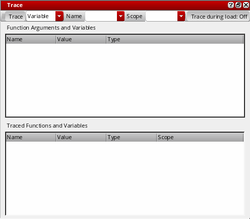 -
Execute a function in your code. The Function Arguments and Variables section of the Trace assistant window gets updated with the name of the function on top of the call stack, along with its arguments, local variables, and their values.
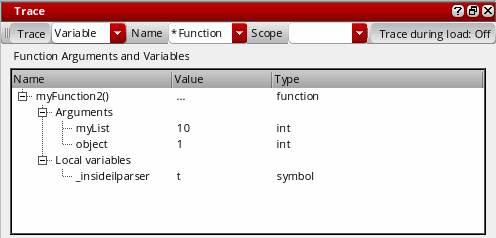The values in the Function Arguments and Variables section will change as you step through the rest of the program statements.
To stop tracking the function, select the function and choose Clear from the context menu.
Tracking Changes
To monitor the changes in your program variables as your program executes, you can select the variables from the source code pane and add them to the Trace assistant. To trace a variable:
-
Choose Window – Assistants – Trace. The Trace assistant displays to the right of the source code pane and is initially empty because you are yet to add a trace variable or function.
-
Select Variable or Function from the Trace drop-down list box and then, specify the name of the variable or function to be traced in the Name drop-down list box. If you are tracing a variable, you can specify the scope of the traced variable in the Scope drop-down list box.
Alternatively, select the variable or function that you want to trace in the source code pane and right-click and choose Trace from the context-menu.You can use regular expressions in the Name drop-down list box, so that all functions or variables that match that expression are traced.The name, value, data type, and scope of the selected variable or function display in the Traced Functions and Variables section of the Trace assistant window. The values of these variables are updated as you step through your program.
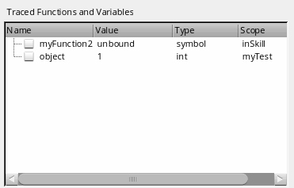
Select the check box next to the name of a variable to add it to watch list, so that you can track when the value of the variable changes.
To remove a variable from the Trace assistant, select the variable in the Trace assistant and choose Untrace Selected or Untrace Selected (All Scopes) from the context menu.
Untrace All removes all functions and variables from the Trace assistant.
Understanding Scope
SKILL IDE uses scope information to determine the value of a variable. Scope defines the visibility of a variable within a code block. As the program progresses from one code block to another, the visibility of the variables defined in the code blocks changes. If a variable is defined inside a function or procedure block, its scope is said to be local to that function or procedure block. If however, the variable is defined at the program level, it has a global scope.
When the debugger hits a function breakpoint, the values of the traced variables within the current scope display. When the execution control exits the function block, the variables local to that function block go out of scope.
Because the debugger uses the scope information to determine the value of a variable, it is possible to have both global and local variables with the same name. For example, in the sample program given below, variable x is used at two places, both in function testBreakpoints() and testBreak().
* Sample program- Understanding the scope of variables
********************************************************/
(defun testBreakpoints (x)
(if x==0 then
printf("end of recursion\n")
else
(testBreak x = (abs x) - 1)
)
x
)
(defun A()
(for i 1 50
(testBreakpoints i)
)
)
(defun B()
(testBreakpoints -2)
(testBreakpoints nil)
)
(defun testBreak (x)
(if x==0 then
printf("end of recursion\n")
else
(testBreakpoints x = (abs x) - 1)
)
x
)
To see how the scope of a variable changes with respect to the function currently being executed, set the entry and exit condition for both the functions (testBreakpoints() and testBreak()) to t. Call testBreakpoints() with the value 9 and then trace the variable x.
Observe the value and scope of x as it changes with respect to the function currently being executed.
Changing Variable Values
To edit the values of variables at runtime by using the Trace assistant:
- While the program is still in the debug mode, choose Window – Assistants – Trace to display the Trace assistant.
- Double-click a variable value to edit it. Type a new value for the variable and press Enter.
Examining the Call Stack
The call stack represents function calls that are currently active in the program being debugged. In the call stack, functions and their arguments are listed in the order in which they were called. Every time a function call is made, a new stack frame is pushed on the call stack. The most recently called function is at the top of the call stack.
By examining the call stack, you can trace the flow of execution, identifying the function calls that resulted in errors.
Displaying the Call Stack
To view the current call stack, choose Window – Assistants – Stack. The Stack assistant displays.
Moving Through the Call Stack
You can move up and down the call stack by clicking individual function names. SKILL IDE updates the source code pane to display the definition of the selected function. For example, if you click the testBreakpoints(9) in the call stack shown above, the source code pane displays the code containing the definition of testBreakpoints(). If the file containing the definition of the selected function is not already open, then it gets opened.
Viewing Class Inheritance Relationships
You can use the Class Browser to understand and follow the class inheritance hierarchy of the classes used in your SKILL code. You have the option to view the subclasses, slot definitions, and superclasses of a class.
Any @reader, @writer, @initarg, and @initform slot options you used for initializing the slots can also be viewed in the Class Browser assistant. All instances of a given class will have the same slots. If a subclass is inherited from a superclass, it also inherits the slots of the superclass. For more information on class inheritance concepts, see
Displaying the Class Hierarchy
-
Choose Window – Assistants – Class Browser. The Class Browser assistant displays.
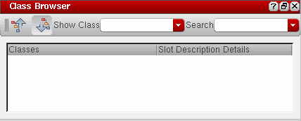 -
In the Show Class drop-down list box, type the class name for which you want to view the class hierarchy and press Enter.
-
Click to view the superclasses or to view the subclasses and slot definitions of the given class. If the superclass or subclass information exists, it is displayed as an inheritance tree in the Class Browser window (refer to the example image below).
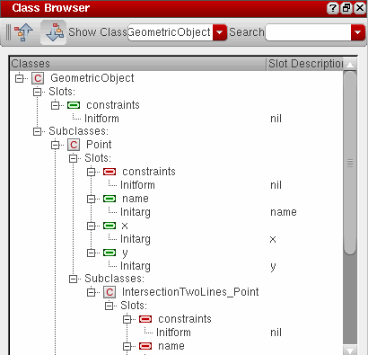You can also view the class hierarchy using the Search toolbar, as described below:
In the Search toolbar, choose Show Class from the first drop-down list box. In the second drop-down list box, type the class name for which you want to view the class hierarchy and press Enter or click the icon. If the class information exists, it is displayed as an inheritance tree in the Class Browser window.
Important Points to Remember
- Different object types are identified by different icons in the class tree. For example, classes are identified by the icon, slots defined within a given class are identified by the icon, and slots inherited from a superclass are identified by the icon.
- Use the Search drop-down list box to search for class or slot names within the current tree view.
- Right-click a class name in the current tree view and choose Go To Source from the context-menu to view its definition in the code. If the code file for the given class is not loaded, a warning message displays instead.
- Right-click a class name and choose Go To Finder from the context-menu to view its syntax and description in Finder.
Working with the Method Browser Assistant
Use the Method Browser assistant to view the method trees of generic functions. You have the option to view all existing methods for a generic function, all applicable methods for a generic function, or only the methods that would be called next in the current function call.
To browse the method tree for a generic function:
-
Choose Window – Assistants – Method Browser. The Method Browser assistant displays.
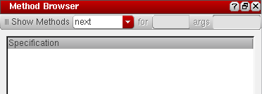 -
Select one of the following options from the Show methods drop-down list:
-
Select next to view the methods that will be called next in the current function call.
-
Select applicable to view all applicable methods for a given generic function. In the for field, type the function name for which you want to view the applicable methods and in the args field, type the variable that takes on the value of the method’s argument at runtime.
-
Select all to view all existing methods for a given generic function. In the for field, type the function name for which you want to view the methods.
-
Select next to view the methods that will be called next in the current function call.
-
Depending on the option you select in the Show methods drop-down list, the results pane displays the method tree for the given generic function.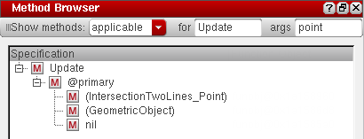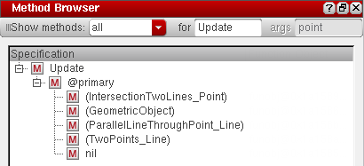
You can also view the method tree using the Search toolbar, as described below:
In the Search toolbar, choose Show Methods from the first drop-down list box. In the second drop-down list box, type the function name for which you want to view the methods and press Enter or click the icon. The method tree for the given generic function displays in the Method Browser window.
After the method tree is populated, you can right-click a method name and choose one of the following options:
- Set Breakpoint: To set breakpoints on the selected method.
- Unset Breakpoint: To unset the breakpoint set on the selected method.
-
Go To Source: To view the method definition in the source file.
- Trace Method: To trace the selected method using the Trace Assistant.
- Untrace Method: To untrace the method selected in the Method Browser.
- Go To Finder: To check the method definition in the Finder Assistant.
Improving the Efficiency of Your SKILL Code
Use SKILL Lint to examine SKILL code for possible errors that go undetected during normal testing. In particular, SKILL Lint is useful in finding unused local variables, global variables that should be declared locally, and functions that have been passed the wrong number of arguments. It also gives tips to improve the efficiency of your SKILL programs. For details, see Appendix B, “SKILL Lint.”
You can use the Lint Manager assistant to set up the files and directories for the Lint checker, set the Lint parameter values before running the Lint tool, and run the Lint tool on the selected files or directors.
Setting Up Files/Directories for the Lint Checker
The Lint Manager assistant provides you the options for setting up the files and directories for the Lint checker. To add files and directories to the Lint Manager assistant:
(Add Files) or (Add Directory) to specify a file or directory on which the Lint check needs to be run. Depending on your choice, the SKILL Lint File Select Dialog or SKILL Lint Directory Select Dialog dialog box displays.il, ils, or .scm should be selected for lint check in the SKILL Lint File Select Dialog.-
Browse to select the file or directory you want to run the Lint checker on and click Choose. The specified files and directories are added to the Lint Manager assistant.
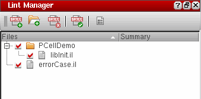
Setting Lint Options
The Lint command lets you set the Lint parameter values before running the Lint tool. To set the Lint parameters:
(Options) in the Edit toolbar. The Options assistant displays with Lint as the active tab.-
In the Package Prefixes field, type a list of acceptable package prefixes for functions and global variables (for example,
tr). SKILL Lint notes any variables that do not have one of the prefixes you typed.
As prefixes are not normally used on local variables, you can find variables that you meant to declare as local but they have a prefix. You can also use this field to determine whether your SKILL program uses a global from someone else’s program. See Checking Function and Global Variable Prefixes for more information. -
In the Global Variables field, type the list of global variables in the code that SKILL Lint should check. SKILL Lint suppresses
VAR8warnings for the global variables specified in this field. -
From the Code Version drop-down list, select the release version of the code you want SKILL Lint to check.
- In the External Files field, browse or type a list of contexts or files that contain the macro definitions on which the code under analysis depends. This is used for loading external definitions files for functions and macros.
- In the Output section, select one or both of the following check boxes to specify where you want to direct the SKILL Lint output:
-
In the Report File Name field, browse or type the name of the file to which you want to write the SKILL Lint output report.
= 100 - [ 25*(number of short list errors) + 20*(number of long list errors) / (number of top level forms) ]
See SKILL Lint PASS/FAIL and IQ Algorithms.
A line in the output report contains the following information:-
Message group priority, usually abbreviated and capitalized (for example,
INFO). -
Built-in message name, in parentheses and capitalized (for example,
(REP110)). -
Message text (for example,
Total information: 0.).
-
Message group priority, usually abbreviated and capitalized (for example,
-
In the Rules section, click Preset to apply system-defined rules or Custom to apply user-defined rules to the SKILL Lint report.
If you click Preset, select one or more of the following check boxes to specify the message groups you want SKILL Lint to report:-
Errors - Select to enable
error,error global, andfatal errormessage groups. If selected, SKILL Lint reports code that might result in any of these errors when the code is run. -
Warnings - Select to enable
warningandwarningglobalmessage groups. If selected, SKILL Lint reports potential errors and areas where you might need to clean up your code. -
Information - Select to enable
informationmessage groups. - Undefined functions - Select to enable message groups having undefined functions that cannot be run in the executable which started SKILL Lint.
-
Performance - Select to enable the
hintandsuggestionmessage group. When selected, SKILL Lint provides hints or suggestions to improve potential performance problems in your SKILL code. -
Cadence Functions - Select when you want SKILL Lint to include Cadence public functions or variables while checking prefixes. If you do not select this check box, SKILL Lint limits prefix checking to your custom functions and variables.
If you click Custom, a hierarchical tree of the available types of error reporting mechanisms displays in the area within the Rules section. Select the check boxes adjacent to the different classes of messages you want SKILL Lint to report.
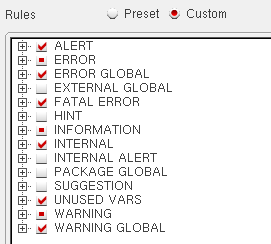Clicking the + sign expands the corresponding message group as shown in the figure below.
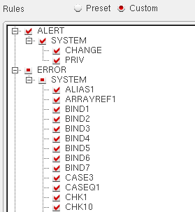 -
Errors - Select to enable
Selecting the check box corresponding to a
Running the SKILL Lint Tool
You can run the Lint checker tool either on the files and directories set up using the Lint Manager assistant, or the currently open file in the source code pane.
Running Lint Checker on Multiple Files and Directories
After you have set up the files and directories for the Lint checker, you can run the Lint tool on the selected files or directories. To do so:
(Run Lint Tool) in the Lint Manager assistant or (Lint all tabs) in the Lint toolbar. The SKILL Lint Progress Box displays.-
After the Lint tool has run, the Lint Manager assistant is updated with the summary of the run result. You can then view the Lint output report in the Lint Output window or the CIW.
To see the Lint report for a particular SKILL file, select the file name from the Lint Manager assistant. The Lint Output window is updated with the Lint report of the selected file.
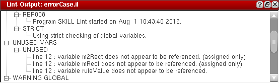The Lint output report is organized into a tree structure with nodes representing errors, warnings, suggestions, hints, information, and unused variables. You can expand the nodes in the Lint Output window and click a message to view the corresponding code in the Source code pane. For example, if the Lint Output window reports that a variable is unused at line 12, you can click the message under UNUSED VARS and view the corresponding code in the source code pane.
Running Lint Checker on the Currently Open File
To run the Lint tool for the currently open file:
(Lint current tab) in the Lint toolbar.Working with the Finder Assistant
Use the Finder assistant to view the abstract and syntax statements for all SKILL/SKILL++ elements like classes, functions, and methods.
To view the syntax and description of a particular SKILL/SKILL++ object, use one of the following options:
- Choose Window – Assistants – Finder.
- Right-click the function name in the source code pane and choose Finder from the context-menu.
- Right-click a class name in the Class Browser assistant and choose Go To Finder.
- Right-click a method name in the Method Browser assistant and choose Go To Finder.
- In the Search toolbar, choose View Finder Doc from the first drop-down list box. Then, specify the name of a SKILL/SKILL++ function in the second drop-down list box and press Enter.

Working with the Code Browser Assistant
Use the Code Browser assistant to browse the calling trees of user-defined functions. It helps you determine what child functions are called by the parent functions. You can expand the entire tree or one node at a time. You can also view the function definition for a user-defined function.
To view the function tree of a user-defined function:
-
Access the Code Browser assistant using one of the following options:
- Choose Window – Assistants – Code Browser.
-
Right-click the function name in the source code pane and choose Go To Code Browser (
) from the context-menu.
The Code Browser assistant as illustrated in the image below displays.
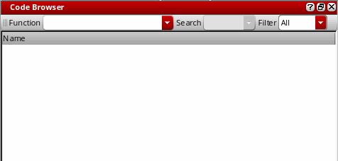 -
In the Function drop-down list, type the name of the function you want to display. The expanded function appears in the results pane.
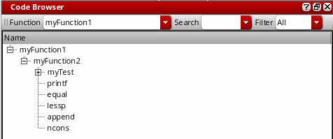You can use the Filter drop-down list to filter the results by User (functions that are neither binary nor write-protected), System (non-user binary SKILL functions), or All.
You can right-click a function name in the results pane and select one of the following options:
- Go To Source: To view the definition of the function in the source code pane.
- Expand Deep: To display all user-defined functions recursively until the entire calling tree is expanded.
- Collapse: To collapse the tree and remove all functions called by the selected function from the results pane.
- Remove: To remove the selected function from the results pane.
Working with the Profiler Assistant
Use the Profiler assistant to check the time and the memory consumption of your SKILL programs. You can use the Profiler assistant to accomplish the following:
- Measure the time spent in each function.
- Show how much SKILL memory is allocated in each function.
- Measure performance without having to modify function definitions.
- Display a function call tree of all functions executed and the time or memory spent in those functions.
- Filter functions so you can see only specific functions.
In addition to the information discussed in the sections below, refer to description of the following functions in the Cadence SKILL Development Reference:
See also, the Command Line: Profiler section in Appendix A, “Command Line Interface.”
Setting Profiler Options
Use the Profiler Options window to define the type of data you want the Profiler to collect and display.
Profiler Options for Data Collection
To set the Profiler Options for collecting data, before running the Profiler, do the following:
-
Choose Options – Profiler. You can also click
 (Profiler Options) in the toolbar displayed in the Profiler assistant window. The Options assistant displays with Profiler as the default tab.
(Profiler Options) in the toolbar displayed in the Profiler assistant window. The Options assistant displays with Profiler as the default tab.
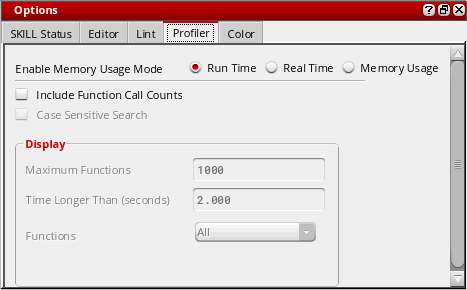 - In the Enable Memory Usage Mode section, select one of the following options:
- Select the Include Function Call Counts check box to view the number of times a function is called in your SKILL program.
Profiler Options for Data Viewing
After you have finished running the Profiler on your SKILL code, the fields in the Display area become enabled (see the image below). These fields let you set the display properties for viewing the collected data.
To set the Profiler Options for viewing data, set the following options in the Display area:
- Select the Case Sensitive Search check box to match the case of the searched function in the profiler summary report.
-
In the Maximum Functions field, type the maximum number of functions you want to see.
-
Depending on the profiler mode currently selected, one of the following fields is displayed:
- Time Longer Than (seconds): This field is displayed when you run the profiler in time mode. Type the minimum number of seconds that should be spent in a function for its information to appear in the summary.
-
Memory Larger Than (bytes): This field is displayed when you run the profiler in memory mode. Type the minimum number of bytes of memory a function has to have allocated in order for its information to appear in the summary.
-
Select one of the following options from the Functions drop-down:
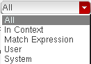- All to display all functions in the profiler window.
- In context to display only the functions in the given context.
- Match Expression to display only those functions that match the given regular expression.
- Match Prefix to display only those functions who prefix match the specified.
- User to display user functions, that is, functions that are neither binary nor write-protected.
- System to display non-user binary SKILL functions.
If you select the In context, Match Expression, or Match Prefix options, a combo box appears below the Functions drop-down. Specify an appropriate context name, regular expression, or prefix name in the box and press Enter.
Running the Profiler
The profiler can be run on a SKILL code in two modes – time mode and memory mode. By default, when you access the profiler for the first time in a Virtuoso session, it is started in time mode. To change the mode any time during the run, use the Profiler Options window (see Profiler Options for Data Collection).
Running the Profiler in Time Mode
To run the profiler in time mode:
-
Choose Window – Assistants – Profiler. The Profiler assistant displays.
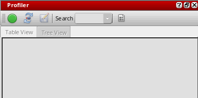 -
Click to start profiling.
- Execute the SKILL function you want to profile.
-
Click to stop profiling. The profile summary report appears in the Profiler window. The total CPU time (in seconds) taken by the profiler is displayed at the bottom of the summary page. You can check the CPU time taken by a particular function by specifying the function name in the Search drop-down list box. To repeat the last search, press Enter.You can also specify a prefix name in the Search drop-down list box to filter the profile summary report by function prefixes. The search results display both public and private functions that match the searched prefix.The profile summary report is available in two formats – Table View or Tree View. Click the related tab to switch the view of the profiler summary report.
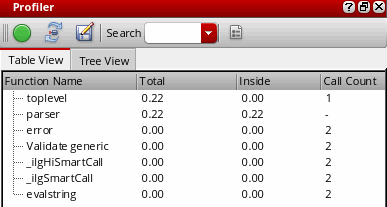
Table View of Profiler Summary (Time Mode)
On the Table View tab (refer to the image above), the profiler summary report displays the following information:
To sort the columns in the profiler summary report, click the column header once.
Tree View of Profiler Summary (Time Mode)
On the Tree View tab, the profiler summary report displays the following information in a hierarchical tree format (see the image below):
Profiler summary report reports if a function is called recursively and displays a + sign against such functions. For example, in the image below, the function fibb1 is called recursively:
Running the Profiler in Memory Mode
To run the profiler in memory mode:
(Profiler Options) in the Profiler assistant window. The Profiler Options assistant displays.- Select the Memory Usage check box to switch to profiling in memory mode.
-
Click to start profiling.
- Execute the SKILL function you want to profile.
-
Click to stop profiling. The profile summary report appears in the Profiler window. The total memory allocated (in bytes) by the profiler displays at the bottom of the summary page. You can check the memory allocated to a particular function by specifying the function name in the Search drop-down list box.
Click the Table View or Tree View tab to switch the profile summary view.
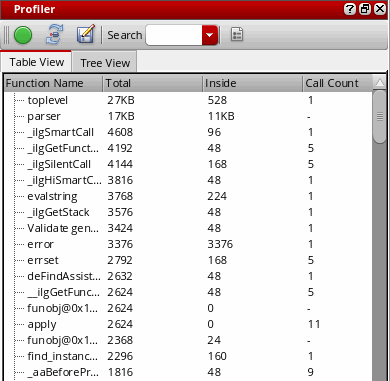
Table View of Profiler Summary (Memory Mode)
On the Table View tab (refer to the image above), the profiler summary report displays the following information:
Tree View of Profiler Summary (Memory Mode)
On the Tree View tab, the profiler summary report displays the following information in a hierarchical tree format (see the image below):
Controls Available on Profiler Summary Report
After the profiler displays the summary report, you can right-click the summary results and choose one of the following options:
-
In the Table View:
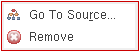 -
In the Tree View:
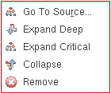- Go To Source: To view the definition of the selected function in the source code pane.
- Expand Deep: To display all functions called by the selected function recursively until the entire calling tree is expanded.
- Expand Critical: To expand and highlight the function call sequence that consumes the maximum memory or takes the maximum execution time for the selected function.
- Collapse: To collapse the function tree.
-
Remove: To remove the selected function from the calling tree.
Saving the Profiler Summary
To save the profiler summary results for later reference, do the following:
-
In the Profiler assistant window, click
 . The Choose a File dialog box displays.
. The Choose a File dialog box displays. - Specify a path and file name for your results and click Save.
The profiler summary results can be saved in both table and tree view. You can later open the saved summary report using the File – Open menu.
Working with Step Result Assistant
Use the Step Result assistant to examine your code as you step through the program statements. Every time you click Step to step through your code, an expression is executed, and the Step Result assistant is updated with the evaluated expression and its value.
To use the Step Result assistant:
-
Choose Window – Assistants – Step Result. The Step Result assistant displays.
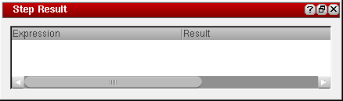 - Load your SKILL file and set breakpoints in your code. For more information, see Working with the Breakpoints Assistant.
- Execute a function in your code to trigger the breakpoint. For more information, see Executing a Function.
-
Click Step 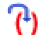
to step through your code one statement at a time. The Step Result assistant is updated with the currently evaluated expression and its value.
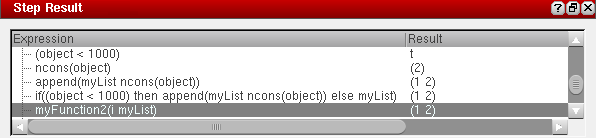
Return to top